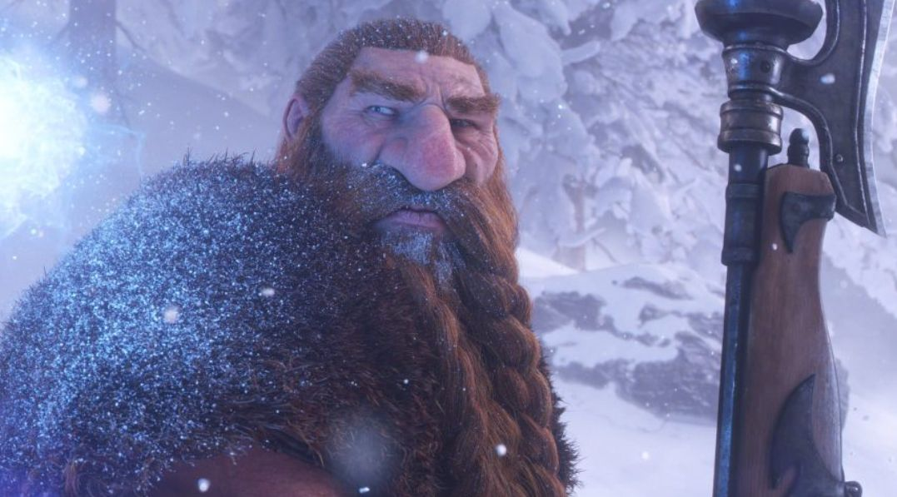

Norfendre, Pandarie, Gilnéas, Grim Batol : où ira WoW Forever ?
29 octobre 2026
Dans une interview à IGN, Kris Zierhut et Tim Jones, développeurs chez Blizzard, ont partagé leurs idées pour l'avenir de Forever. Rien n'est confirmé, mais les pistes font rêver.

D'abord les Royaumes de l'Est et Kalimdor
Forever reste centré sur les deux continents d'origine. Pas question d'enchaîner les extensions comme dans le WoW moderne : les nouveautés arriveront par des mises à jour de contenu. Mais Blizzard n'exclut pas d'emmener les joueurs ailleurs de temps en temps, sans pour autant prévoir ces voyages à court terme.
Des escapades en Outreterre, en Norfendre ou en Pandarie
Plutôt que des continents complets, l'équipe imagine des visites ponctuelles, par exemple une quête ou un donjon qui envoie les joueurs sur place avant de les ramener en Azeroth. Ces lieux pourraient être réutilisés pour raconter d'autres histoires que celles de Burning Crusade ou de Wrath of the Lich King.
Gilnéas et Grim Batol
- Gilnéas existe déjà dans Forever mais reste inaccessible. Blizzard voudrait y raconter une histoire inédite, située avant Cataclysm.
- Grim Batol pourrait aller bien plus loin que le donjon de Cataclysm, en explorant les profondeurs et les tours de la montagne.
D'autres lieux sur la liste
- Le Rêve d'émeraude, cité comme une future zone à explorer.
- Les Grottes du temps, où il reste selon l'équipe beaucoup à découvrir.
- Reflet-de-Lune, que les développeurs aimeraient visiter un jour, même si le WoW moderne y développe actuellement ses propres histoires.
- Le Marais des Chagrins, avec leur propre version de la ville gobeline ajoutée à l'époque de Burning Crusade.
- Un donjon au nord du cratère d'Un'Goro, inspiré des installations des Titans.
- La suite des histoires autour de Hache-Tripes, du prince Tortheldrin et des Shen'dralar, et de futures mises à jour autour des Eredar et des élémentaires de l'air.
Ce qui n'est pas prévu
Pas de nouvelles capitales hors des Royaumes de l'Est et de Kalimdor, ni d'hôtel des ventes dans ces nouvelles régions. Et surtout, toutes ces pistes restent des réflexions pour les années à venir : aucune n'est confirmée ni datée.
Source : interview des développeurs de Blizzard accordée à IGN, relayée par JudgeHype ↗